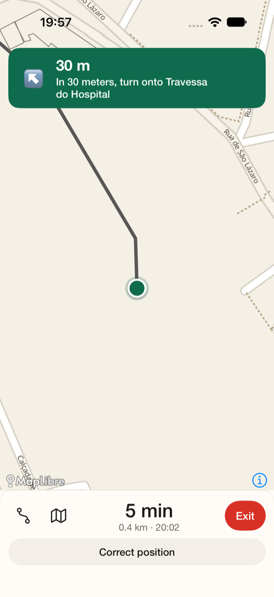

Maps
The streets and the places stay on the phone. You can search when the network is gone.

Open source. The code is on GitHub.
The streets and the places stay on the phone. You can search when the network is gone.

You get a route on foot, by bicycle or by car, and you follow the turns on the phone.

Water, medical care, emergency services and shops are marked. You can save a place you need to find again.
The app does not use GPS. You set your position on the map, and you can turn the motion sensors off.
You drop a pin, give it a name and save it on the phone. You can remove it later.
During a trip, the list of turns runs from the start to the place you chose.
There is no account and no charge.
Once the map is on the phone, search and routes do not need a network.
The app collects no data. Sensor readings stay on the phone.
Blackout Maps is free to read and use. The catalog explains how a country or a state is added.
You need a network to download the app and the map. After that, the map, the search and the routes work on the phone with no network.
No. You set your position on the map. Motion sensors can keep an approximate position, those readings stay on the phone, and you can turn the sensors off.
Yes. There is no account and no charge. The app collects no data.
Not yet. The iOS app and the Android app are not in a store.
Portugal downloads on first launch. Other countries and states are added from Settings. They are listed in the public catalog.
You can drop a pin, name it and save it on the phone. You can remove it later.
Get the map while you still have a network. Neither app is in a store yet.
Download for iOS
Download for Android
This is the place for a guide to preparedness gear. No product is listed yet, and this page has no prices and no shop links.
Reserved for a product. None is chosen yet.
Reserved for a product. None is chosen yet.
Reserved for a product. None is chosen yet.
Reserved for a product. None is chosen yet.
Reserved for a product. None is chosen yet.
Reserved for a product. None is chosen yet.